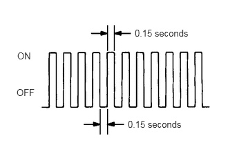

| Last Modified: 12-09-2025 | 6.11:8.1.0 | Doc ID: RM100000002HBSG |
| Model Year Start: 2024 | Model: Tacoma | Prod Date Range: [12/2023 - ] |
| Title: STOP AND START: STOP AND START SYSTEM: CHECK MODE PROCEDURE; 2024 - 2026 MY Tacoma Tacoma HV [12/2023 - ] | ||
CHECK MODE PROCEDURE
HINT:
Compared to normal mode, check mode is more sensitive to malfunctions. Therefore, check mode can detect malfunctions that cannot be detected in normal mode.
NOTICE:
All the stored DTCs and freeze frame data are cleared if: 1) the engine stop and start ECU is switched from normal mode to check mode or vice versa; or 2) the ignition switch is turned from ON to ACC or off while in check mode. Before changing modes, always check for and note any DTCs and freeze frame data.
CHECK MODE PROCEDURE
(a) Check and ensure the following conditions:
(1) Battery voltage is 11 V or higher.
(2) Shift lever is in P or N.
(3) A/C switch is off.
(b) Turn the ignition switch off.
(c) Connect the GTS to the DLC3.
(d) Turn the ignition switch to ON.
(e) Turn the GTS on.
(f) Enter the following menus: Powertrain / Stop and Start / Utility / Check Mode.
Powertrain > Stop and Start > Utility
|
Tester Display |
|---|
|
Check Mode |
(g) Switch the engine stop and start ECU from normal mode to check mode.
(h) Check that the stop and start indicator flashes as shown in the illustration.
(i) Start the engine.
(j) Check that the stop and start indicator turns off.
(k) Simulate the conditions of the malfunction described by the customer.
(l) Check for DTCs and freeze frame data using the GTS.
|
|
|